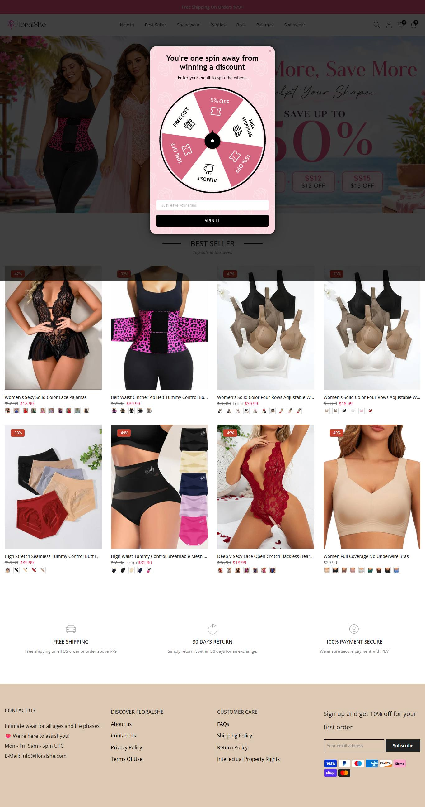
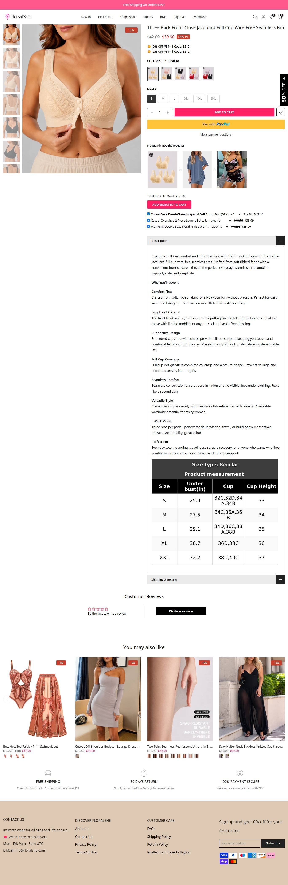
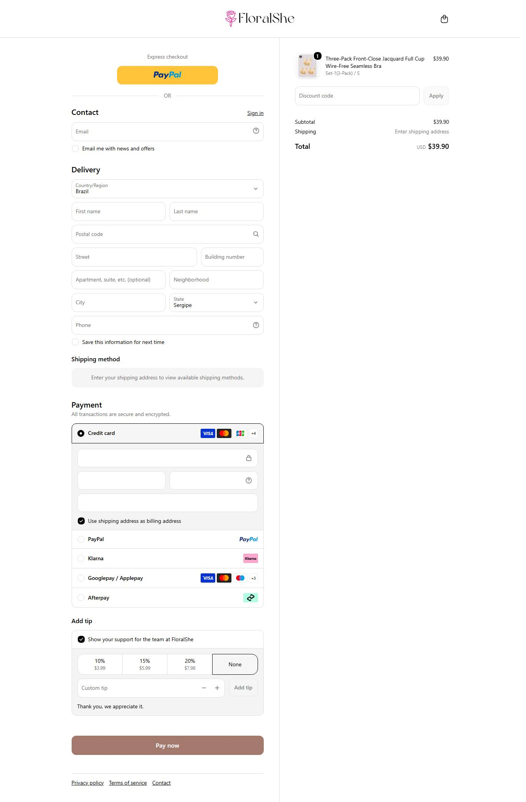

Maquina de volume puro: 32.615 anuncios no historico e 3,0% de sobrevivencia. Mas os lancamentos recentes sao sutia, calcinha e biquini, nao sleepwear.
Medido na Meta Ad Library em 20/07/2026, atualizado em 22/07/2026. Contagem global por pagina via page_ids + estimated_total_count.
Angulo de venda: Volume e preco baixo. Sleepwear e apenas uma linha; lingerie, calcinha e biquini dominam os lancamentos recentes.
Visitas mensais medidas. Este e o dado de "acesso" real da loja, nao estimativa.
Medido via products.json. Mediana e o preco do meio do catalogo, nao o ticket medio real.
| Produto | Preco | Compare-at |
|---|---|---|
| Three-Pack Front-Close Jacquard Full Cup Wire-Free Seamless Bra | $39.90 | — |
| Five-Pack Cotton Seamless Breathable Panties | $39.90 | — |
| Bow-detailed Paisley Print Swimsuit set | $37.90 | — |
| Sexy Jacquard Lace Lingerie Set | $25.90 | — |



Mediana de $35,90. Quem entra em sleepwear generico abaixo de $50 compete com esta operacao e com a SHEIN ao mesmo tempo.